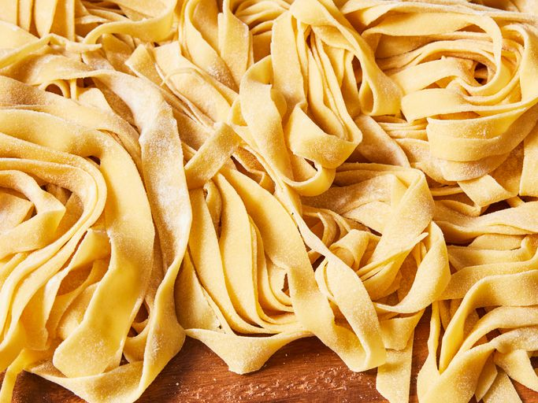

Homemade pasta

Homemade pasta recipe made of flour, eggs, salt, olive oil and water. This pasta recipe
is easy to make and great for other pasta recipes too!
Ingredients
- 2 cups of all-purpose flour
- 3 large eggs, at room temperature
- 2 tablespoons of olive oil
- 1 teaspoon of salt
- 2 tablespoons water, or as needed
Steps
- Gather all ingredients
- Mix flour, eggs, olive oil, and salt in a bowl until combined.
Add water, 1 teaspoon at a time, until a smooth, thick dough forms.
- Turn dough out onto a lightly floured work surface and knead for 10 minutes. Let
dough rest for 5 to 10 minutes.
- Divide dough into 8 balls; roll and cut dough into desired pasta shape using a pasta machine.
Home